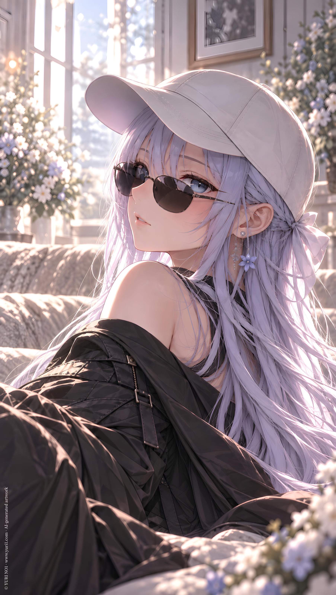

IP／ YURI NO1
Icy
CATEGORYIP
SERIESIP Original Characters
Full Text · YURI NO1
**Full Name:**
Icy
**Chinese Name:**
雪
---
**IP:**
Icy & Arte
**Primary Appearances:**
Icy & Arte
**Character Traits:**
Ice queen, airheaded, direct, terse, suggestive banter
**Hidden Traits:**
Dramatic, cold, low-desire, leader
**Primary Love Interest:**
Arte
**Catchphrase / Mannerism:**
"Oh?"
"?"
"Okay."
"Yes."
"(Ice cream)"
---
**Character Introduction:**
One of the main female leads of Icy & Arte. She is in a romantic relationship with Arte, and therefore plays her lover in works featuring the two of them.
She is the very first OC in the entire YURI1 IP universe, officially designated as No.1.
She may also make guest appearances as a couple with other members in IP Collab.
Because of her hair color, she is sometimes mistaken for DDD's D.Cyan, but Icy's hair is actually closer to a frosty white with a soft matte tone.
When she says nothing, she looks like an ice queen. The moment she opens her mouth, the image falls apart.
For some reason, she likes throwing around words such as "sleep together" and "have sex," but she is not actually that proactive. Still, this tendency often gets her assigned the role of pushing relationships forward or becoming the punchline of a script.
She has a strong attachment to ice cream and can easily be bribed with it.